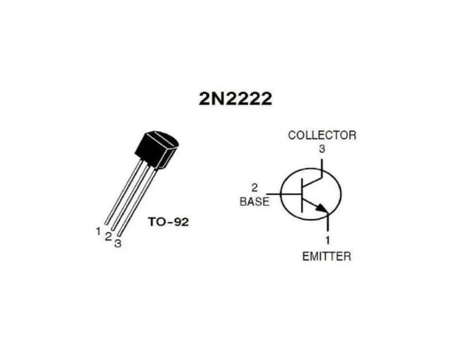
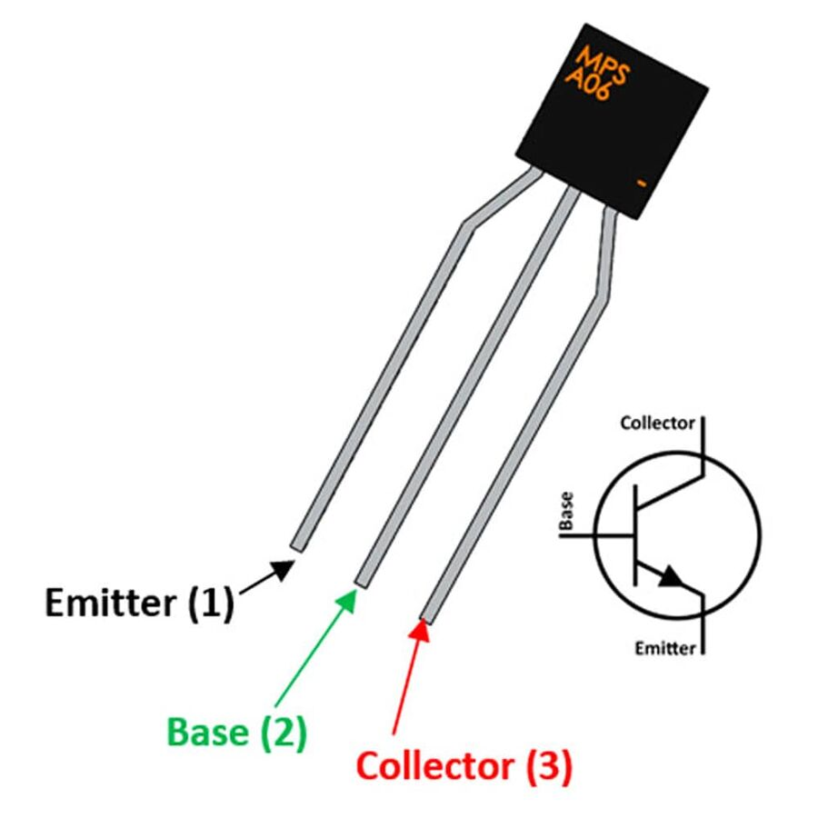

TRANSISTOR
Un transistor es un componente electrónico que funciona como interruptor o amplificador de señales. Se
compone de tres partes: el emisor, la base y el colector. Hay dos tipos principales: NPN y PNP.
- Como interruptor: El transistor controla el flujo de corriente entre el colector y el emisor,
dependiendo de la corriente aplicada a la base. Si la corriente en la base es suficiente, el transistor
permite el paso de corriente entre el colector y el emisor (se "enciende"). Si no hay corriente en la
base, el transistor se "apaga" y bloquea el paso de corriente.
-
Como amplificador: Un pequeño cambio en la corriente de la base puede producir un gran cambio en la
corriente entre el colector y el emisor, amplificando la señal de entrada.
Los transistores son fundamentales en muchos dispositivos electrónicos, desde amplificadores hasta circuitos
digitales.
Hablaremos del transistor 2N2222
El transistor 2N2222 es un transistor de tipo NPN muy común y utilizado en electrónica debido a su
versatilidad y bajo costo. Aquí te explico sus aspectos clave:
Funcionamiento:
El 2N2222 es un transistor bipolar de unión (BJT). Como mencioné antes, tiene tres terminales: emisor (E),
base (B) y colector (C). Su funcionamiento básico es amplificar señales o actuar como interruptor.
- Cuando se aplica una corriente en la base (B), esto permite que la corriente fluya desde el colector (C)
hacia el emisor (E). El transistor "conduce" solo si hay una corriente adecuada en la base.
- Si no hay corriente en la base, el transistor se "apaga", bloqueando el flujo entre colector y emisor.

Terminales:
- Base (B): Controla el transistor. Se aplica una corriente pequeña en este terminal para permitir el
flujo de corriente mayor entre el colector y el emisor.
- Colector (C): Este es el terminal donde la corriente fluye hacia el transistor desde una fuente
externa (por ejemplo, una carga).
- Emisor (E): El terminal por el que sale la corriente, generalmente conectado a tierra o a un
potencial bajo.

TIPOS
El 2N2222 es principalmente un transistor NPN, lo que significa que su corriente fluye de colector a
emisor, y la corriente base es positiva con respecto al emisor para permitir la conducción.
Sin embargo, hay transistores PNP (como el 2N2907) que operan de manera inversa, con la corriente
fluyendo de emisor a colector.
APLICACIONES
El transistor 2N2222 es ideal para una amplia gama de aplicaciones debido a su versatilidad:
- Amplificación de señales: Se usa en circuitos amplificadores para aumentar señales débiles, como
en radios, micrófonos o preamplificadores.
- Conmutación de corriente: Funciona como interruptor en circuitos de control, como encender y
apagar dispositivos electrónicos (por ejemplo, LEDs, motores pequeños, etc.).
- Osciladores y generadores de señal: Puede usarse en la creación de señales de frecuencia o en
circuitos de temporización.
- Control de relés: Es útil para activar dispositivos de mayor corriente, como relés, a través de
una señal de control de baja corriente.
Este transistor es muy útil para circuitos de baja potencia y tiene un alto ganancia de corriente
(hFE), lo que lo hace adecuado para muchas aplicaciones en electrónica básica y proyectos.